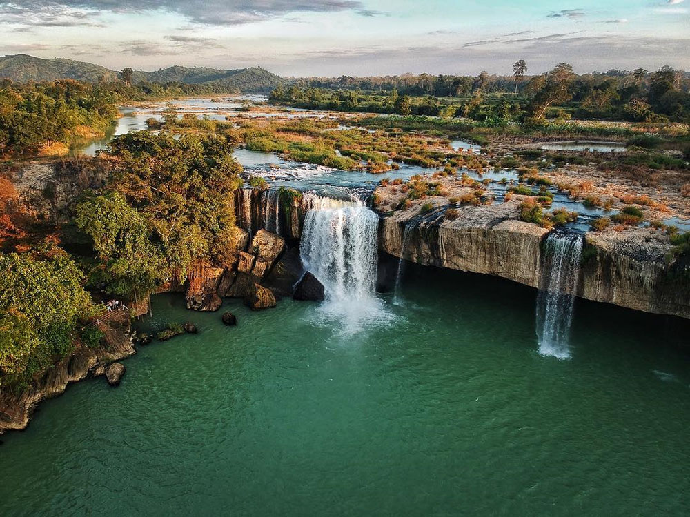

Giá từ: 2.490.000đ/người
🌄Tây Nguyên – vùng đất đại ngàn hùng vĩ, nơi vang vọng tiếng cồng chiêng giữa đêm rừng và mùi cà phê nồng nàn trong gió.
Buôn Ma Thuột không chỉ là thủ phủ cà phê của Việt Nam mà còn là nơi lưu giữ nét văn hóa nguyên sơ, đặc trưng của các dân tộc Tây Nguyên.
Buổi sáng, du khách ghé thăm Làng cà phê Trung Nguyên, thưởng thức tách cà phê nguyên chất trong không gian đậm chất Tây Nguyên.
Sau đó, tham quan Thác Dray Nur – “nàng tiên giữa đại ngàn” với dòng nước trắng xóa, hùng vĩ mà thơ mộng.
Buổi trưa, đoàn di chuyển đến Hồ Lắk – hồ nước tự nhiên lớn nhất Tây Nguyên, nơi có thể đi thuyền độc mộc và khám phá buôn làng người M’nông.
Buổi tối, tham gia đêm giao lưu văn hóa cồng chiêng – di sản phi vật thể của nhân loại.
Giữa tiếng trống, tiếng chiêng và ánh lửa bập bùng, bạn sẽ thấy tâm hồn mình hòa vào nhịp điệu của núi rừng – giản dị mà sâu lắng.